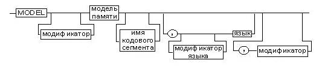
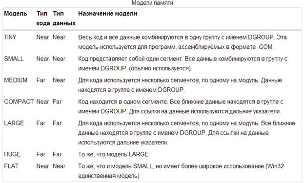
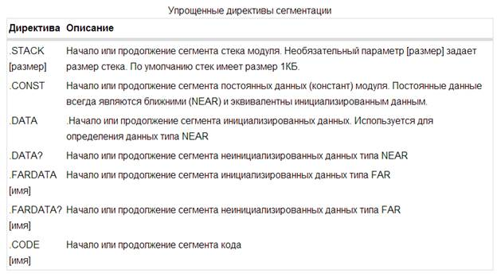

электронный ресурс по учебной дисциплине 1-40 05 01-09 "Информационные системы и технологии (в обеспечении промышленной безопасности)"
|
||
| Оглавление | Программа | Теория | Практика| Контроль знаний | Об авторах | ||
Раздел 1. Процессоры
INTEL
Тема 2
Форматы команд. Директивы. Программы типа COM и EXE
1. Форматы команд
Для операций с
разными способами адресации и разными форматами данных необходимо введение
различных форматов команд, которые по-разному задают местонахождение и
количество операндов, и, естественно, имеют разную длину. Для широко
распространѐнных сейчас двухадресных ЭВМ это такие форматы команд (в
скобках указано их мнемоническое обозначение):
· регистр – регистр (RR);
· регистр – память, память – регистр (RX);
· регистр – непосредственный операнд в
команде (RI);
· память – непосредственный операнд в
команде (SI);
· память – память, т.е. оба операнда в
основной памяти (SS).
Многообразие
форматов команд и данных позволяет писать более компактные и эффективные
программы на языке машины, однако, как уже упоминалось, сильно усложняет
центральный процессор ЭВМ.
Типичный формат записи команд:
[метка:] [ [префикс] мнемокод
[операнд {, операнд}] ] [;комментарий]
где мнемокод — непосредственно мнемоника инструкции процессору. К ней
могут быть добавлены префиксы (повторения, изменения типа адресации и пр.).
В качестве операндов могут выступать константы, адреса регистров, адреса
в оперативной памяти и пр. Различия между синтаксисом Intel и AT&T касаются
в основном порядка перечисления операндов и указания различных методов адресации.
Используемые мнемоники обычно одинаковы для всех процессоров одной
архитектуры или семейства архитектур (среди широко известных — мнемоники
процессоров и контроллеров x86, ARM, SPARC, PowerPC, M68k). Они описываются в
спецификации процессоров.
Возможные исключения:
· если ассемблер
использует кроссплатформенный AT&T-синтаксис (оригинальные мнемоники
приводятся к синтаксису AT&T);
· если
изначально существовало два стандарта записи мнемоник (система команд была
наследована от процессора другого производителя).
Например, процессор Zilog Z80 наследовал систему команд Intel 8080,
расширил её и поменял мнемоники (и обозначения регистров) на свой лад.
Процессоры Motorola Fireball наследовали систему команд Z80, несколько её
урезав. Вместе с тем, Motorola официально вернулась к мнемоникам Intel и в
данный момент половина ассемблеров для Fireball работает с мнемониками Intel, а
половина — с мнемониками Zilog.
2. Директивы
Программа на языке ассемблера может
содержать директивы: инструкции, не переводящиеся непосредственно в машинные
команды, а управляющие работой компилятора. Набор и синтаксис их значительно
разнятся и зависят не от аппаратной платформы, а от используемого транслятора
(порождая диалекты языков в пределах одного семейства архитектур). В качестве
«джентльменского набора» директив можно выделить следующие:
· определение данных
(констант и переменных),
· управление
организацией программы в памяти и параметрами выходного файла,
· задание режима
работы компилятора,
· всевозможные
абстракции (то есть элементы языков высокого уровня) — от оформления процедур и
функций (для упрощения реализации парадигмы процедурного программирования) до
условных конструкций и циклов (для парадигмы структурного программирования),
· макросы.
Директивы. В некоторых учебных пособиях
директивы называют командами Ассемблеру, что хорошо отражает их назначение в
программе. Эти предложения, как уже упоминалось, за редким исключением не
порождают в машинной программе никакого кода, т.е. команд или переменных.
Директивы используются программистом для того, чтобы давать программе Ассемблер
определённые указания, задавать синтаксические конструкции и управлять работой
Ассемблера при компиляции (переводе) программы на язык машины. В качестве
примера рассмотрим директивы для объявления начала и конца описания сегмента с
именем A:
A segment
...
A ends
Частным случаем директивы будем считать и
предложение - метку, которая приписывает имя (метку) непосредственно следующему
за ней предложению Ассемблера. Так, в приведённом ниже примере метка Next_Statement_Name
является именем следующего за ней предложения, таким
образом, у этого предложения будет две
метки (два имени):
Next_Statement_Name:
L: mov ax,2
3. Модели памяти
Для простых программ, содержащих по одному
сегменту для кода, данных и стека, хотелось бы упростить её описание. Для этого
были придуманы упрощенные директивы сегментации. И возникла потребность
управлять размещением сегментов и функциях директивы ASSUME. Была придумана
директива MODEL. Эта директива связывает сегменты, которые в случае
использования упрощенных директив сегментации имеют предопределенные имена, с
сегментными регистрами.

Рисунок.
2.1. – Синтаксис директивы MODEL
Различные модификаторы модели: NEARSTACK,
FARSTACK, USE16, USE32, DOS, OS2
Единственным обязательным параметром
директивы MODEL является модель памяти. Этот параметр определяет набор
сегментов программы, размеры сегментов данных и кода, способ связывания
сегментов и сегментных регистров.
Стандартные значения параметра модель
памяти директивы MODEL.

Рисунок
2.2. – Модели памяти
Как писалось
выше, директива model позволяет использовать в программах на ассемблере упрощенные директивы сегментации.
Вот они:

Рисунок
2.3. – Упрощенные директивы сегментации
4. Загрузка и выполнение программ в DOS
Пусть в оперативную память компьютера
загружен выполняемый модуль некоторой программы. Команды программы должны в
установленном порядке считываться в микропроцессор и выполняться, при этом они
используют данные, расположенные в памяти и регистрах микропроцессора. При
загрузке программ в оперативную память DOS (дисковая операционная система) обычно
выделяет для программы три сегмента памяти, имеющие самостоятельное назначение.
Они содержат код, данные и стек программы. Некоторые сегменты могут и
отсутствовать. DOS инициализирует как
минимум три сегментных регистра: CS, DS и SS. При этом совокупности байтов, представляющих команды
процессора (код программы), и данные помещаются из файла на диске в оперативную
память, а адреса этих сегментов записываются в CS и DS соответственно. Сегмент стека либо выделяется в
области, указанной в программе, либо совпадает (если он явно в программе не
описан) с самым первым сегментом программы. Адрес сегмента стека помещается в
регистр SS. Программа может иметь несколько кодовых сегментов и сегментов данных и в
процессе выполнения специальными командами выполнять переключения между ними.
Для того чтобы адресовать одновременно два
сегмента данных, например, при выполнении операции пересылки из одной области
памяти в другую, можно использовать регистр дополнительного сегмента ES. Кодовый сегмент и сегмент стека всегда определяются
содержимым своих регистров (CS и SS), и поэтому в каждый момент выполнения программы всегда используется
какой-то один кодовый сегмент и один сегмент стека. Причем если переключение
кодового сегмента – довольно простая операция, то переключать сегмент стека
можно только при условии четкого представления логики работы программы со
стеком, иначе это может привести к зависанию системы.
Все сегменты могут использовать различные
области памяти, а могут частично или полностью перекрываться .
Кодовый сегмент должен обязательно
описываться в программе, все остальные сегменты могут отсутствовать. В этом
случае DOS при загрузке программы в
оперативную память инициирует регистры DS и ES значением адреса префикса программного сегмента PSP (Program Segment Prefics) – специальной области
оперативной памяти размером 256 (100h) байт. PSP может использоваться в
программе для определения имен файлов и параметров из командной строки,
введенной при запуске программы на выполнение, объема доступной памяти,
переменных окружения системы и т.д. Регистр SS при этом инициализируется значением
сегмента, находящегося сразу за PSP, т.е. первого сегмента программы. При этом необходимо учитывать, что стек
«растет вниз» (при помещении в стек содержимое регистра SP, указывающего на вершину стека, уменьшается, а при
считывании из стека – увеличивается). Таким образом, при помещении в
стек каких-либо значений они могут затереть PSP и программы, находящиеся в младших адресах памяти, что может привести к
непредсказуемым последствиям. Поэтому рекомендуется всегда явно описывать
сегмент стека в тексте программы, задавая ему размер, достаточный для
нормальной работы.
После инициализации в регистре IP находится смещение первой команды программы относительно начала кодового
сегмента, адрес которого помещен в регистр CS. Процессор, считывая эту команду, начинает выполнение
программы, постоянно изменяя содержимое регистра IP и при необходимости CS для получения кодов
очередных команд до тех пор, пока не встретит команду завершения программы. DS после загрузки программы установлен на начало PSP, поэтому для его использования в первых двух командах
программы выполняется загрузка DS значением сегмента
данных.
MOV AX,DATA
MOV DS,AX
5. EXE- и COM-программы
DOS может загружать и выполнять
программные файлы двух типов – COM и EXE.
Ввиду сегментации адресного пространства
процессора 8086 и того факта, что переходы (JMP) и вызовы (CALL) используют относительную
адресацию, оба типа программ могут выполняться в любом месте памяти. Программы
никогда не пишутся в предположении, что они будут загружаться с определенного
адреса (за исключением некоторых самозагружающихся, защищенных от копирования
программ).
Файл COM-формата – это двоичный образ кода
и данных программы. Такой файл должен занимать менее 64K и не содержать
перемещаемых адресов сегментов.
Файл EXE-формата содержит специальный
заголовок, при помощи которого загрузчик выполняет настройку
ссылок на сегменты в загруженном модуле.
Перед загрузкой COM- или EXE-программы DOS
определяет сегментный адрес, называемый префиксом программного сегмента (PSP),
как базовый для программы. Затем DOS выполняет следующие шаги:
- создает копию текущего
окружения DOS (область памяти, содержащая ряд строк в формате ASCIIZ, которые могут использоваться приложениями для
получения некоторой системной информации и для передачи данных между
программами) для программы;
- помещает путь, откуда
загружена программа, в конец окружения;
- заполняет поля PSP
информацией, полезной для загружаемой программы (количество памяти, доступное
программе; сегментный адрес окружения DOS; текущие векторы прерываний INT 22H
INT 23H и INT 24H и т.д).
EXE-программы. EXE-программы содержат несколько программных сегментов, включая сегмент
кода, данных и стека. EXE-файл загружается, начиная с адреса PSP:0100h. В процессе загрузки считывается информация заголовка EXE в начале
файла и выполняется перемещение адресов сегментов. Это означает, что ссылки
типа
mov ax,data_seg
mov ds,ax
и
call my_far_proc
должны быть приведены (пересчитаны), чтобы
учесть тот факт, что программа была загружена в произвольно выбранный сегмент.
После перемещения управление передается
загрузочному модулю посредством инструкции далекого перехода (FAR JMP) к адресу
CS:IP, извлеченному из заголовка EXE.
В момент получения управления программой
EXE -формата:
- DS и ES указывают на
начало PSP
- CS, IP, SS и SP
инициализированы значениями, указанными в заголовке EXE
- поле PSP MemTop (вершина
доступной памяти системы в параграфах) содержит значение, указанное в заголовке
EXE. Обычно вся доступная память распределена программе.
COM-программы. COM-программы содержат единственный сегмент (или, во всяком случае, не
содержат явных ссылок на другие сегменты). Образ COM-файла считывается с диска
и помещается в память, начиная с PSP:0100h. В общем случае, COM-программа может использовать множественные сегменты,
но она должна сама вычислять сегментные адреса, используя PSP как базу.
COM-программы предпочтительнее
EXE-программ, когда дело касается небольших ассемблерных утилит. Они быстрее
загружаются, ибо не требуется перемещения сегментов, и занимают меньше места на
диске, поскольку заголовок EXE и сегмент стека отсутствуют в загрузочном
модуле.
После загрузки двоичного образа COM-программы:
- CS, DS, ES и SS
указывают на PSP;
- SP указывает на конец
сегмента PSP (обычно 0FFFEH, но может быть и
меньше, если полный 64K сегмент недоступен);
- слово по смещению 06H в
PSP (доступные байты в программном сегменте) указывает, какая часть
программного сегмента доступна;
- вся память системы за
программным сегментом распределена программе;
- слово 00H помещено
(PUSH) в стек.
- IP содержит 100H (первый
байт модуля) в результате команды JMP PSP:100H.
6. Выход из программы
Завершить программу можно следующими
способами:
- через функцию 4CH (EXIT)
прерывания 21H в любой момент, независимо от значений
регистров;
- через функцию 00H
прерывания 21H или прерывание INT 20H, когда CS указывает
на PSP.
Функция DOS 4CH позволяет возвращать родительскому процессу код выхода, который может
быть проверен вызывающей программой или командой COMMAND.COM "IF
ERRORLEVEL".
Можно также завершить программу и оставить
ее постоянно резидентной (TSR), используя либо INT 27H , либо функцию 31H
(KEEP) прерывания 21H. Последний способ имеет те преимущества, что резидентный код может быть
длиннее 64K, и что в этом случае можно сформировать код выхода для
родительского процесса.
Пример COM-программы для MS-DOS на диалекте TASM
.MODEL TINY
CODE SEGMENT
ASSUME CS:CODE, DS:CODE
ORG 100h
START:
mov ah,9
mov dx,OFFSET Msg
int 21h
int 20h
Msg DB 'Hello
World',13,10,'$'
CODE ENDS
END START
Пример EXE-программы для MS-DOS на диалекте TASM
.MODEL SMALL
.DATA
msg DB 'Hello
World',13,10,'$'
.CODE
START:
mov ax, @DATA
mov ds, ax
mov ax, 0900h
lea dx, msg
int 21h
mov ax, 4C00h
int 21h
END START
Пример программы для Linux/x86 на диалекте NASM
SECTION .data
msg: db "Hello, world",10
len: equ $-msg
SECTION .text
global _start
_start: mov edx, len
mov ecx, msg
mov ebx, 1 ; stdout
mov eax, 4 ; write(2)
int 0x80
mov ebx, 0
mov eax, 1 ; exit(2)
int 0x80
[1] [Электронный ресурс]. – Режим доступа: http://www.intuit.ru/studies/courses/2192/31/lecture/982?page=3
[2] [Электронный ресурс]. – Режим доступа: http://indigobits.com/assembler/41-modeli-pamyati-direktiva-opredeleniya-modeli-pamyati-uproshhennye-direktivy-segmentacii.html
[3] Галисеев Г. В. Ассемблер
для Win 32. Самоучитель. — М.: Диалектика, 2007. — 368 с.
[4] Зубков С. В. Ассемблер для DOS, Windows и UNIX. — М. ДМК Пресс; СПб. Питер, 2006. —
608 с.
[5] Кип Ирвин. Язык ассемблера для процессоров Intel = Assembly Language for Intel-Based Computers. — М.: Вильямс, 2005. – 912 с.
[6] Дэвид Харрис, Сара Харрис. Цифровая
схемотехника и архитектура компьютера, 2-е издание, перевод командой компаний и
университетов России, Украины, США и Великобритании, Morgan Kaufman, 2013. –
1621 с.
[7] И.В. Лукьянова. Конспект лекций
по курсу «Конструирование программ и языки программирования» часть 2 Язык
программирования ассемблер, Минск, 2006. – 78 с.
Содержание
| (С) БГУИР |